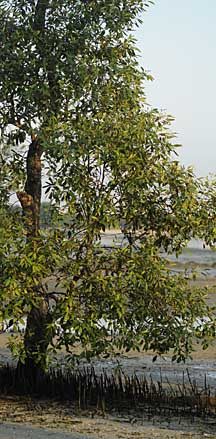
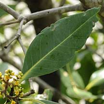
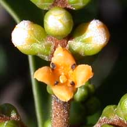
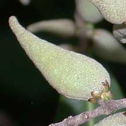
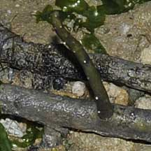
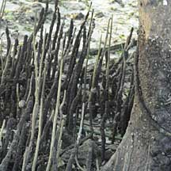
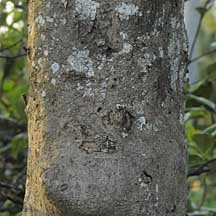
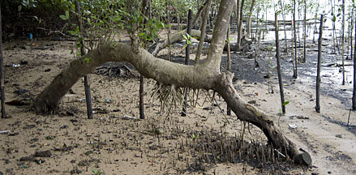
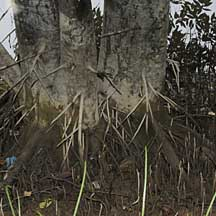

|
|
| plants text index | photo index |
| mangroves > Avicennia in general |
| Api-api
putih Avicennia alba Family Acanthaceae updated Oct 2016 Where seen? This tree with pencil roots is commonly encountered in many of our mangroves. It can sometimes even be spotted from afar by the white undersides of their narrow leaves, flipping up in the wind. It is usually found on newly formed mudbanks on the seaward side or along and near rivers. It is considered a pioneering species of sheltered shores. Features: Shrub or tree up to 10-20m tall. Bark somewhat brown, may be smooth or slightly rough but not fissured. Pneumatophores pencil-like - thin cylindrical with rounded tip, not very tall (about 20cm). May have stilt roots emerging from the base of the tree trunk. Leaves generally long and pointed (8-12cm long), shiny dark green above with white underside. 'Alba' and 'putih' means 'white' in Latin and Malay respectively. A. alba can have different, 'non-standard' leaf and fruit shapes if the tree is growing in the shade or affected by low nutrients or other difficult conditions. Flowers small (about 0.5cm), yellow in clusters that are less crowded together. Fruit generally tear-drop shaped (1-4cm) with long tapering pointed tip, smooth velvety. Seedlings form as soon as the fruit drops off the parent plant. In A. alba, the seedlings have hooked hairs so that the seedlings are often seen in entangled clumps. |
 Pasir Ris, May 09 |
 Leaves very white underneath. Berlayar Creek, Jan 09 |
 Small flowers, spaced apart. Sungei Buloh Wetland Reserve, May 02 |
 Fruits with long pointed tips. Berlayar Creek, Mar 09 |
|
 Pulau Ubin, May 09 |
 Sungei Buloh Wetland Reserve, May 02 |
 Sungei Buloh, Nov 01 |
|
 Young pneumatophore. |
 |
 Pasir Ris, May 09 |
 Fallen over tree which recovered. Kranji Nature Trail, Feb 11 |
 May have stilt roots as well as pencil-like pneumatophores. Kranji Canal, Mar 09 |
|
| Api-api putih on Singapore shores |
| Photos of Api-api putih for free download from wildsingapore flickr |
| Distribution in Singapore on this wildsingapore flickr map |
|
Links
References
|
|
|